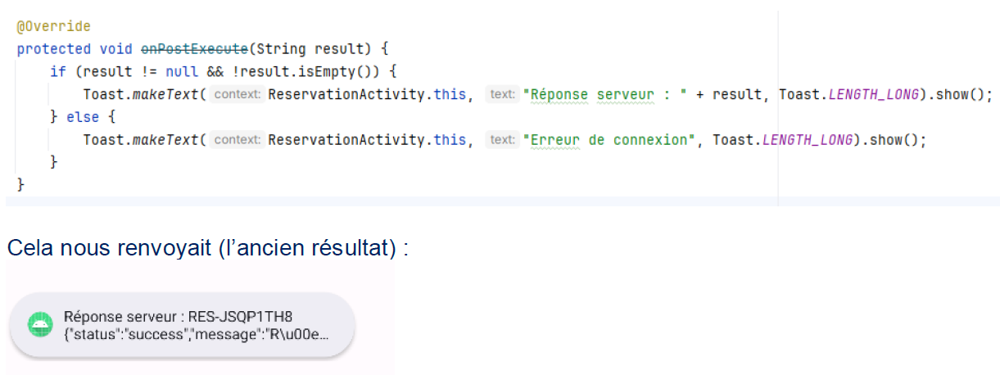
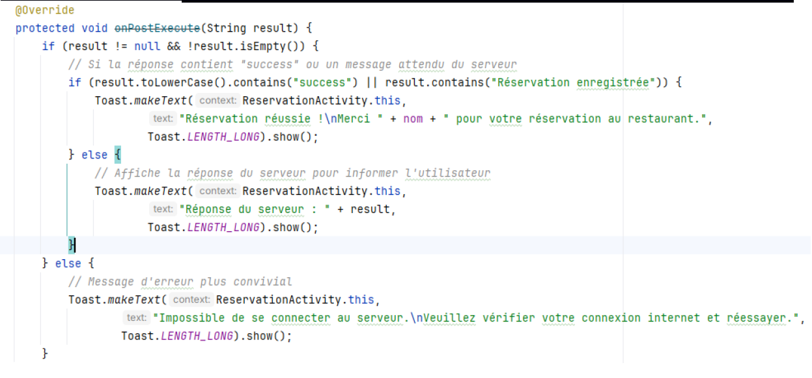
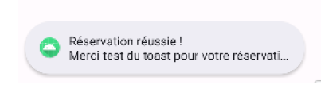

Ticket 9 – UI : Amélioration du Toast
Problématique initiale
Le Toast affiché après la réservation n’était pas assez clair ni personnalisé.
L’utilisateur ne savait pas exactement si sa réservation avait été enregistrée correctement.

Solution apportée
La modification a été effectuée dans onPostExecute() de la classe AsyncTask
(appelée après doInBackground) :
- Si result n’est pas nul et contient "success" ou "Réservation enregistrée", un
Toast de succès personnalisé est affiché, incluant le nom du client.
- Sinon, la réponse brute du serveur est affichée pour informer l’utilisateur du problème.
- Si result est nul ou vide, un Toast convivial demande à l’utilisateur de vérifier sa
connexion internet.

